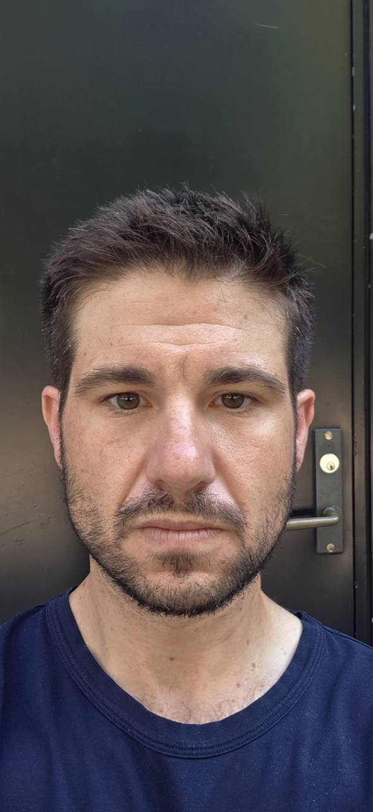
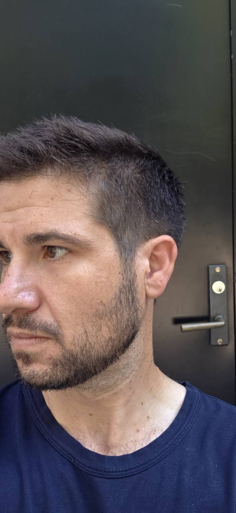
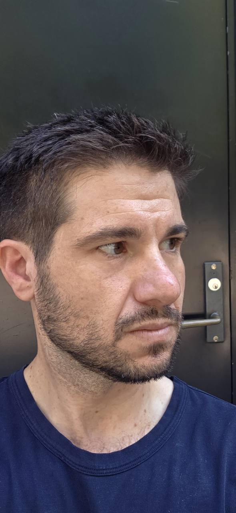
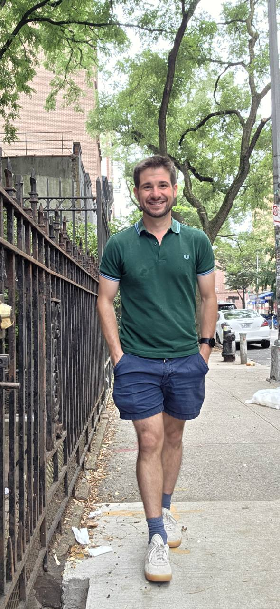

Put the four photographs side by side and the useful fact arrives before the criticism: the same face survives four different circumstances, while the apparent proportions do not. Hard light roughens the forehead, the near camera enlarges the central face, a raised fringe lengthens the head, and a hand in each pocket narrows the body. The audit therefore begins with the things that move. They are also the things you can improve most safely.
The verdict
Your base is already doing most of the heavy work: dense-looking hair, a strong beard pattern, a defined lower face, broadly balanced features, and a lean athletic silhouette. The photos do not reveal a missing structural asset. They reveal finish problems: mild skin shine and texture under hard light, a haircut that becomes slightly high and dry on top, beard edges that could be more intentional, clothing that softens your shoulder line, and camera circumstances that punish the center of your face.
Daily photoprotection, simple barrier care, and only one active at a time. This is the clearest repeatable facial gain.
Reduce top height, preserve temple density, sharpen beard geometry, and keep the moustache off the lip.
Build lateral delts and upper back modestly, then use shorter, more structured tops and cleaner footwear.
| Rank | Change | Why it applies to these photos | Expected return | Risk / cost |
|---|---|---|---|---|
| 1 | Standardized SPF and moisturizer | Outdoor close-ups show forehead shine, fine lines, and uneven surface reflectance. Hard light exaggerates them, but prevention remains worthwhile. | High over months | Low |
| 2 | Lower, controlled haircut | Hair density looks useful. Excess vertical texture makes the face read longer and slightly separates the hair from the otherwise compact frame. | Immediate | Low |
| 3 | Beard map and lip clearance | Jaw coverage is a strength. A more regular cheek line, neckline, and moustache edge turns density into design. | Immediate | Low |
| 4 | Clothing geometry | The green polo color works, but the soft collar, long torso, hands in pockets, high sock contrast, and bulky worn shoes blunt the athletic line. | Immediate | Low to medium |
| 5 | Shoulder and upper-back bias | Your photographic shoulder-to-waist ratio is already favorable. A small muscular increase would improve clothes without needing a cut. | Medium, 3 to 12 months | Low if progressed well |
| 6 | Dental consult if whitening matters | The only smiling image is distant. It supports checking color in person, not diagnosing alignment or prescribing treatment. | Moderate | Medium |
| Last | Surgery, filler, hair-loss drugs | No supplied photo establishes an indication. The close lens actively makes central-face judgments less reliable. | Unproven for you | High |
What the photographs actually show




Photographic measurements, not ideals
| Measure | Estimate | What it means | Confidence |
|---|---|---|---|
| Pupil span / face width | 162 / 408 ≈ 0.40 | A tracking baseline only. It is not a treatment target and is sensitive to the estimated face edge. | Medium |
| Mouth / visible nose width | ≈142 / 80 ≈ 1.78 | Broadly balanced in this frame. The beard and expression alter both landmarks. | Low |
| Photo facial thirds | ≈137 : 191 : 204 px | The lower two segments look similar. Hairline occlusion makes the upper segment unreliable. Do not chase 1:1:1. | Low |
| Photo fWHR-like value | ≈1.63 | Included because forums obsess over it. Pose and camera settings alter it, and there is no responsible personal “optimal” target here. | Low |
| Shoulder / waist width | ≈204 / 130 ≈ 1.57 | Already near the aesthetic forum claim of 1.6, but the claim is single-source opinion and the image is not standardized. | Low |
Hair, beard, brows, eyes, and smile
| Category | Nitpick | Exact adjustment | Frequency | Do not do |
|---|---|---|---|---|
| Haircut | The current cut is fundamentally flattering, but the dry, separated top rises high enough to lengthen the face. | Ask for a low taper, 6 to 12 mm through the lower sides, 35 to 50 mm on top, textured with scissors, and 15 to 25% less finished height. Keep frontal density and avoid exposing the temples unnecessarily. | Cut every 3 to 4 weeks. Style with a pea-sized matte cream worked from back to front. | No high skin fade, glossy wet product, or prophylactic hair-loss medication from these images. |
| Beard | Density helps the jaw, but slight irregularity at the cheeks and moustache makes the frame look accidental up close. | Set most of the beard at 4 to 6 mm. Keep the chin 1 to 2 mm longer if desired. Define a natural cheek line without carving it low. Set the neckline about one to two finger widths above the Adam’s apple, following a shallow U to each jaw angle. Clip hairs off the vermilion border of the upper lip. | Full trim every 4 to 7 days; cheek, neck, and lip cleanup twice weekly. | Do not raise the neckline onto the underside of the jaw or draw a ruler-straight cheek line. |
| Brows | Good density and shape. A few long hairs may disrupt the top edge, but the brows are not a deficit. | Brush upward and trim only tips extending beyond the natural border. Remove obvious central strays. Preserve width at the medial brow. | Check every 2 weeks. | No thinning, sharp arch, or major tail shortening. |
| Under-eye | Mild shadow appears in hard outdoor light. A photo cannot tell pigment from vessels, anatomy, dehydration, or ordinary shadow. | First fix sleep regularity and camera light. Use moisturizer and sunscreen around the orbital rim without placing irritating actives close to the eye. If persistent in neutral light, ask a dermatologist to classify the cause. | Reassess after 8 to 12 weeks under identical light. | No filler recommendation from these images. Reviews find mixed causes and limited comparative evidence.13 |
| Smile and teeth | The full-body image shows a positive, natural smile but is too distant to assess shade, occlusion, or alignment. | Get a routine dental exam and cleaning first. If shade remains the concern, discuss a custom-tray protocol. One randomized trial used 10% carbamide peroxide nightly for two weeks, but your dentist should set wear time and protect against sensitivity.22 | Cleaning per dentist; whitening only as directed. | Do not combine whitening systems or continue through significant sensitivity or gum irritation. |
Plastic surgery and office-procedure options
This is an option map based on looksmaxxing priorities and the visible image areas. It is not a diagnosis or a finding that you need surgery. The supplied photos are useful for asking better questions, but they do not show a true profile, nasal airway, eyelid support, occlusion, scalp miniaturization, skin laxity under examination, or how any feature looks at conversational distance.
Options worth understanding
| Option | Photo fit | Specific version to ask about | What it could change | Recovery and durability | Main reasons to hesitate |
|---|---|---|---|---|---|
| Fractional laser resurfacing | Best fit | Begin by comparing a fractional nonablative laser with fractional erbium or CO2 resurfacing. The choice depends on skin type, depth of lines, pigment risk, tolerance for downtime, and the clinician's device experience. | The visible target is surface quality: fine forehead lines, reflectance, mild textural unevenness, and sun-related change. This works on the strongest improvement category in the photos without changing facial structure. | Nonablative treatment usually trades a series of lighter sessions for less downtime. Ablative resurfacing is stronger and may require about 1 to 2 weeks of surface healing; redness can persist for months. Results can last, but aging and ultraviolet exposure continue.35,36 | Pigment change, prolonged redness, infection, acne flare, scarring, and a recovery burden disproportionate to mild findings. A dermatologist or plastic surgeon should examine skin type first. |
| Conservative forehead neuromodulator | Possible | Ask about softening dynamic horizontal forehead lines while preserving brow position and expression. The correct discussion is movement pattern and product label, not a fixed number of units. Units are not interchangeable among products. | Temporarily weakens the muscle pattern that deepens forehead lines. It does not improve pores, pigment, or static skin texture, so it complements rather than replaces sunscreen or resurfacing. | Onset and duration vary by product and patient, and maintenance is repeated. Ask the injector for the expected interval for the exact product. | Brow or eyelid droop, asymmetry, headache, unwanted loss of expression, and the need for repeat treatment. The photographs show lines, but not enough movement to plan injections.37 |
| Primary rhinoplasty | Consult only | If the nose bothers you at normal distance, ask a facial plastic surgeon to compare conservative dorsal-line refinement, preservation rhinoplasty, limited tip deprojection or refinement, and a functional septorhinoplasty only if breathing examination supports it. Open and closed are access strategies, not quality rankings. | Could reduce dorsal or tip prominence and change nose-to-chin balance. The sensible goal would be restraint: preserve a masculine nose, airway, tip support, and family resemblance instead of pursuing a generic small nose. | Visible bruising and early swelling commonly occupy the first weeks; tip refinement continues for many months. The result is durable, but revision is not rare enough to ignore. | The close photos exaggerate the central face. A systematic review reported revision from 0% to 10.9%, infection up to 4%, bleeding up to 4.1%, septal perforation up to 2.6%, and airway obstruction requiring revision up to 3%.23,24 |
| Lower blepharoplasty with fat preservation or repositioning | Weak fit | Only if standardized photos and examination show true fat prolapse or a stable lid-cheek hollow, ask an oculoplastic surgeon about a transconjunctival approach with conservative fat repositioning. That approach uses an internal incision and does not remove skin. | Can smooth a true bag-to-hollow transition. It will not reliably fix pigment, vascular color, sleep-related shadow, or ordinary hard-light shading. | Public-facing recovery is often around 10 to 14 days, while swelling and final refinement take longer. Results are long-lasting but aging continues.27 | Your photos show mild shadow, not obvious bags. Fat repositioning studies reported an overall complication estimate of 11.2%, contour dissatisfaction or irregularity 6.2%, and reoperation 2.4%. Eyelid surgery also carries dry-eye, lid-position, closure, and rare vision risks.25,26 |
| Otoplasty | Preference only | If ear projection bothers you in real life, ask about cartilage-sparing antihelical sutures, conchal setback, or a hybrid. The goal should be a natural angle rather than a pinned-flat ear. | Moves prominent ears closer to the head and can refine fold definition. In your photos, the ears do not dominate the frontal view, so the likely visual return is small. | The position change is durable. Dressings and activity restrictions vary by technique. | Recurrence or reoperation was about 4.27% in a cartilage-sparing meta-analysis, with suture erosion about 2.46% and hematoma about 1.34%.31,32 |
Specific options that appear poorly matched
| Option | Why looksmaxxing forums mention it | Why it looks wrong for these photos | What would have to change the answer |
|---|---|---|---|
| Chin implant or sliding genioplasty | Used to increase projection or alter vertical chin position and lower-face balance. | Your chin and beard-supported jaw already read as defined and proportionate. More projection risks making the profile harsh or forcing the nose to look smaller through a second operation rather than addressing an actual concern. | A standardized true profile, bite examination, and cephalometric finding that matches a concern you experience in person. Implants and bone movement have different infection, hardware, relapse, and sensory-risk profiles.29,30 |
| Jaw angle implants | Promoted for a wider or more angular lower face. | The existing jaw is already a strength, and beard density supplies additional width. Implants could make the lower face disproportionately heavy and introduce infection, malposition, asymmetry, and nerve risk. | A surgeon would need three-dimensional imaging and a specific skeletal deficiency, not a forum ratio or a bearded frontal photograph. |
| Buccal-fat removal | Promoted to hollow the mid-cheek and exaggerate cheekbones. | Your face is already lean. Removing permanent mid-cheek volume can age poorly, create asymmetry, or make the face gaunt as natural facial volume falls with age. | A persistent, examination-confirmed lower-cheek fullness that remains through weight stability and is genuinely bothersome. These photos do not show it. |
| Submental liposuction or neck lift | Used to sharpen the cervicomental angle and jawline. | The jaw-neck transition appears clean and the full-body image reads lean. There is no visible fat pocket or laxity worth operating on. | A neutral true-profile photo and examination showing a stable submental pocket or laxity rather than head position or beard shadow. |
| Upper blepharoplasty or brow lift | Used for lid hooding, excess skin, visual obstruction, or brow descent. | The photos show useful brow density and no clear excess upper-lid skin. Removing skin or lifting the brow could feminize or hollow a masculine eye frame and introduce asymmetry or dry-eye problems. | Functional symptoms, true hooding, ptosis, or brow descent found on examination. Eyelid show depends on the brow, fat span, crease, and levator function, not one photograph.28 |
| Facelift or deep-plane facelift | Used for jowls, midface descent, and neck laxity. | No meaningful jowling or laxity appears in the supplied views. This would be a high-burden answer to a problem the images do not contain. | Future age-related laxity that becomes visible in standardized views. Published pooled estimates include motor nerve injury around 0.66%, sensory injury around 0.39%, and deep-plane hematoma around 2.7%.33,34 |
| Hair transplant | Used to reconstruct a receded hairline or add density after stabilized loss. | Hair looks dense, and the current hairline supports the face. A transplant without documented loss spends finite donor hair and may look isolated if future loss progresses. | Standardized serial photographs, dermoscopy showing miniaturization, a stable loss pattern, and adequate donor supply. No transplant decision should come from these four photos.40 |
Two popular “nonsurgical” shortcuts to treat with caution
| Shortcut | Why it is tempting | Decision for you |
|---|---|---|
| Nasal filler | Can camouflage a dorsal irregularity without an operation, but it adds volume rather than making a nose smaller. | Skip. The FDA does not approve filler injection in the nose, and a meta-analysis documented vascular occlusion, skin necrosis, and vision loss among rare major complications. It is a poor bargain when the central-face concern may be camera distortion.38,39 |
| RF microneedling | Markets tightening and texture improvement with less downtime than ablative laser. | Consider only after comparing it with ordinary microneedling and fractional laser. The FDA has received reports of burns, scarring, fat loss, disfigurement, and nerve damage with certain aesthetic uses. Loss of facial fat would be especially counterproductive on an already lean face.41,42 |
Skin: the highest-return surface
The photos support a conservative surface program, not a diagnosis. Fine forehead lines, shine, and slight tonal unevenness are visible under hard light. The correct first move is consistency, not a crowded shelf.
| When | Protocol | Dose and timing | Evidence boundary |
|---|---|---|---|
| Morning | Rinse or gentle cleanser, light moisturizer if needed, then broad-spectrum water-resistant sunscreen SPF 30 or higher. | Apply 15 minutes before outdoor exposure. AAD advises at least one teaspoon for the face and reapplication every 2 hours outdoors, immediately after swimming or sweating.6 | Daily sunscreen reduced photoaging progression in a randomized 4.5-year trial.5 |
| Optional AM active | Niacinamide 4 to 5% if the goal is modest improvement in visible texture and uneven tone. | Start once daily for 12 weeks. Patch test first. Stop for persistent burning, rash, or worsening redness. | Five percent formulations improved appearance measures in 12-week trials, but the participants were primarily women and the product vehicles differed.10,11 |
| Evening | Gentle cleanser and fragrance-free moisturizer. | Use nightly. Introduce no second active for the first 2 weeks. | AAD recommends sunscreen and moisturizer as the initial anti-aging pair and one new concern-specific product at a time.7 |
| Optional PM active | An over-the-counter low-strength retinol may be tested. Prescription tretinoin requires a dermatologist. | For OTC retinol, follow the label, begin every other night, and moisturize. For tretinoin, ask a clinician about candidacy, formulation, amount, interactions, and titration. Do not self-prescribe a concentration from this report. | Tretinoin improves photoaging in randomized trials but commonly irritates; AAD advises low intensity, slow introduction, nighttime use, moisturizer, and daytime photoprotection.8,12 |
Physique: refine the V, do not force a cut
The clothed full-body photo reads lean and athletic. It does not justify a body-fat estimate, a target weight, or calorie restriction. The rational aesthetic move is maintenance-calorie training with a small lateral-delt and upper-back bias while preserving legs.
| Day | Work | Prescription | Purpose |
|---|---|---|---|
| A | Incline press, chest-supported row, lateral raise, split squat, hamstring curl | 3 working sets each, mostly 6 to 15 reps; stop with 1 to 3 good reps in reserve. | Upper chest, back width, shoulder cap, and leg maintenance. |
| B | Pull-up or pulldown, overhead press, cable lateral raise, Romanian deadlift, calf raise | 3 working sets each; use controlled full ranges and add load only when all target reps are clean. | Lat width, delts, posterior chain, and lower-leg balance. |
| C | Flat press, one-arm row, rear-delt fly, leg press, curls and triceps | 2 to 3 working sets each. Keep sessions to about 60 to 75 minutes. | Second weekly exposure and proportionate arm detail. |
| Variable | Specific target | Why |
|---|---|---|
| Weekly volume | Begin around 10 direct sets for lateral delts and 10 to 14 fractional sets for upper back/lats. Keep other major groups around 8 to 12 sets. Add only 1 to 2 sets when recovery and performance remain good. | Meta-analyses support a dose-response with diminishing returns, not an unlimited-volume contest.14,15 |
| Frequency | Train each target muscle at least twice weekly. | Twice weekly outperformed once weekly in the available frequency meta-analysis.16 |
| Effort | Most sets at 1 to 3 repetitions in reserve; occasional final isolation set closer to failure. | Momentary failure is not required for hypertrophy and adds fatigue.17 |
| Protein | A practical ceiling is about 1.6 g/kg/day, divided near 0.4 g/kg across four meals if convenient. | Supported by meta-analysis and a distribution review. More is not automatically better.18,19 |
| Creatine | Optional creatine monohydrate, 3 to 5 g daily at any convenient time. No loading is required. Use a third-party-tested product. | Supported for healthy adults in the sports-nutrition literature. Ask a clinician first if kidney disease, pregnancy, or medication interactions apply.20 |
| Sleep | Schedule 7 to 9 hours nightly with a consistent wake time. | Adult consensus range. It supports recovery and makes under-eye comparison less confounded.21 |
Clothing and presentation: length is the lever
| Element | Keep | Change | Measurement goal |
|---|---|---|---|
| Color | The deep green polo works with your coloring, as do navy, charcoal, cream, burgundy, and muted blue. | Build tonal combinations instead of splitting the body with high contrast. | Keep shirt, belt line, socks, and shoes within neighboring values when lengthening the silhouette matters. |
| Top | Open placket and fitted sleeves. | Choose a firmer collar and a slightly shorter body. Avoid cling at the midsection and excess fabric below it. | Shoulder seam at the acromion. Untucked hem near mid-fly, not over the seat. Sleeve around mid-biceps with light contact, no squeeze. |
| Trousers | The navy short and exposed quad suit the athletic build. | Use a clean front, mid rise, and straighter drape. For smarter settings, choose modestly higher rise trousers to lengthen the leg line. | Shorts with a 5 to 7 inch inseam, commonly 2 to 4 inches above the kneecap depending on your actual leg. Minimal break in trousers. |
| Footwear | Light sneaker can work casually. | Replace the visibly worn, bulky pair with a cleaner low-profile sneaker or sleek loafer. Reduce sock contrast. | Low vamp, moderate sole, clean toe shape. Sock close to shoe or trouser value. |
| Posture | The smile and relaxed gait make the image approachable. | For posed photos, remove hands from pockets, let elbows clear the torso, place weight 60/40, turn the body 10 to 20 degrees, then return eyes to camera. | Camera at sternum level for full body, 2.5 to 4 metres away; avoid the crossed-leg mid-stride frame when measuring proportions. |
Your 12-week operating plan
| Window | Actions | What to record | Decision rule |
|---|---|---|---|
| Day 0 | Take standardized baseline photos. Book haircut using the dimensions above. Map beard cheek and neck boundaries. Start sunscreen and moisturizer only. | Front, 45-degree, profile, and full body in fixed light. Save camera distance and zoom. | No structural conclusions until the standardized set exists. |
| Weeks 1-2 | Stabilize morning and evening skin routine. Begin three-day training template. Alter or buy one shorter structured top and clean low-profile shoes. | Irritation, sunscreen comfort, training loads, waist and shoulder garment measurements. | If skin stings or burns persistently, stop the new product. Do not add an active. |
| Weeks 3-6 | If the base routine is comfortable, trial one optional active. Maintain beard twice weekly and haircut at week 3 or 4. Progress training by reps, then load. | One photo every 2 weeks, never daily. Same distance, light, expression, and time of day. | Judge texture only at week 6. Judge muscle change later. A single flattering photo is not progress data. |
| Weeks 7-12 | Continue the routine that caused no irritation. Repeat haircut. Review shirt length, shoe profile, and training adherence. Arrange dental or dermatology visit only for a defined remaining concern. | Repeat the full baseline series at week 12 and compare side by side. | Keep changes that improve at least two standardized views and real-life comfort. Drop fussy changes with no visible return. |
Evidence map and boundaries
Forum frequency tells you what communities repeat, not what works. In the completed 2,500-page non-Reddit corpus, hair-loss medication appeared on 19.92% of source pages, resistance training on 13.40%, diet or calorie control on 11.16%, fat loss on 8.08%, clothing on 6.24%, hairstyle on 5.48%, and skincare on 3.32%. Those counts explain the culture. They do not authorize medication or prove an aesthetic optimum.
- Paskhover B, et al. Nasal Distortion in Short-Distance Photographs: The Selfie Effect. 2018.
- Cooper EA, et al. Focal Length Affects Depicted Shape and Perception of Facial Images.
- Amirlak B, et al. Size and Perception of Facial Features with Selfie Photographs. 2022.
- Zarem HA. Photographic standards in plastic surgery. 1998.
- Hughes MCB, et al. Sunscreen and prevention of skin aging: a randomized trial. 2013.
- American Academy of Dermatology. How to apply sunscreen.
- American Academy of Dermatology. How to select anti-aging skin care products.
- Zasada M, et al. Topical tretinoin for treating photoaging: a systematic review. 2022.
- Bissett DL, et al. Niacinamide and aging facial skin appearance. 2005.
- Kawada A, et al. Five percent niacinamide split-face trial. 2008.
- American Academy of Dermatology. Retinoid or retinol?
- Huang YL, et al. Periorbital hyperpigmentation: a systematic review. 2020.
- Pelland JC, et al. The Resistance Training Dose Response. 2026.
- Schoenfeld BJ, et al. Weekly resistance training volume and muscle mass. 2017.
- Schoenfeld BJ, et al. Resistance training frequency and hypertrophy. 2016.
- Refalo MC, et al. Training proximity to failure and hypertrophy. 2023.
- Morton RW, et al. Protein supplementation and resistance training gains. 2018.
- Schoenfeld BJ, Aragon AA. Protein per meal and distribution. 2018.
- Antonio J, et al. Common questions and misconceptions about creatine. 2021.
- Hirshkowitz M, et al. Sleep duration recommendations. 2015.
- de Geus JL, et al. At-home and in-office dental bleaching. 2016.
- Sowerby LJ, et al. Incidence of postoperative adverse events after rhinoplasty. Systematic review.
- American Society of Plastic Surgeons. Practice parameter: nasal surgery.
- Gimenez AR, et al. Safety and complications in lower-eyelid blepharoplasty. Systematic review.
- Xu Z, et al. Complications of lower-eyelid fat grafting and repositioning. Systematic review and meta-analysis.
- American Society of Plastic Surgeons. Eyelid surgery results and recovery.
- Chalkias IN, et al. Factors that affect eyelid show and their importance in upper blepharoplasty. Systematic review.
- Alali Y, et al. Implant-based chin augmentation versus osseous genioplasty. Systematic review.
- American Society of Plastic Surgeons. Chin surgery options.
- Alanazi H. Complications of cartilage-sparing otoplasty. Systematic review and meta-analysis.
- American Society of Plastic Surgeons. Ear surgery procedure options.
- Gandra G, et al. Facelift surgery and nerve injury. Systematic review and meta-analysis.
- Azzi JL, et al. Prevention of hematoma in facelift patients. Systematic review and meta-analysis.
- Jordan R, et al. Ablative versus nonablative lasers for skin resurfacing. Systematic review.
- American Society of Plastic Surgeons. Laser skin resurfacing recovery.
- Cavallini M, et al. Adverse events of botulinum toxin type A in facial rejuvenation. Systematic review and meta-analysis.
- Alharbi M, et al. Complications of nonsurgical rhinoplasty. Systematic review and meta-analysis.
- US Food and Drug Administration. Dermal filler approved uses and risks.
- American Society of Plastic Surgeons. Hair transplantation and restoration.
- Foppiani JA, et al. Microneedling for facial rejuvenation. Systematic review.
- US Food and Drug Administration. Potential risks with certain uses of RF microneedling.
- American Society of Plastic Surgeons. Choose a plastic surgeon you can trust.